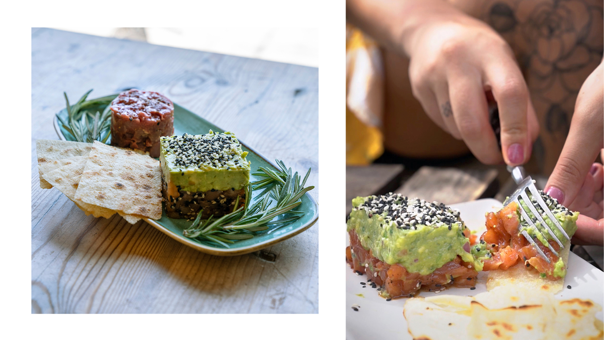
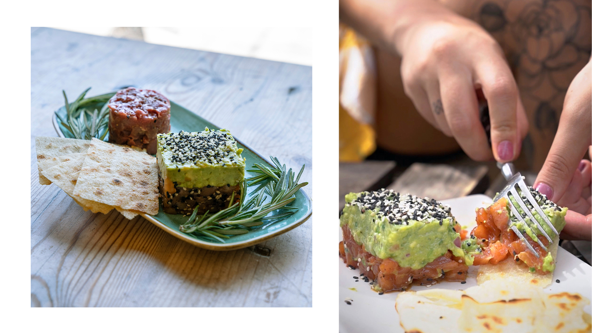

Platos destacados

 

Socarrat de mar
¡La estrella del menú! Arroz de Mar socarrat by Polito… diferente a todos.
Gyozas de Langostino, con soja, ponzu y sésamo
Un #must para amantes del #asianfood.
Coca de Vidre de Mossèn, con tomate
La Coca de Mossèn ¡El pan hecho poesía! Sabor, textura y aroma inigualables..
Costillar de cerdo con salsa BBQ, patatas al horno y puré de boniato
El plato imprescindible para los #meatlovers
Rodaballo a la plancha con meunière de alcaparras
¡El más top de nuestra pesca del día!
Tagliata de ternera a la toscana con rúcula y parma
Un clásico de la cocina mediterránea
Verduras al dente salteadas al Wok
Deliciosas y #healthy… ¡Un auténtico veggie pleasure!
Tartar de Salmón
Simpleza que despierta una explosión de frescura y sabor